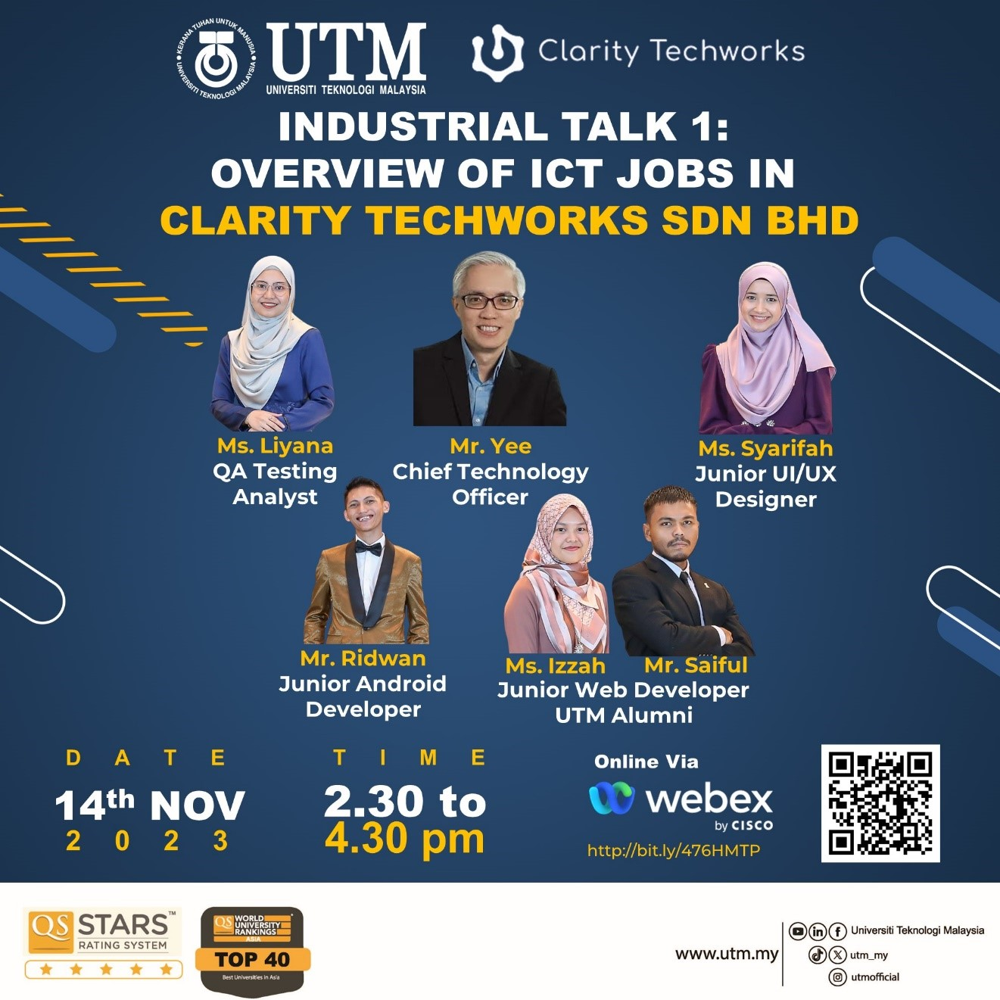
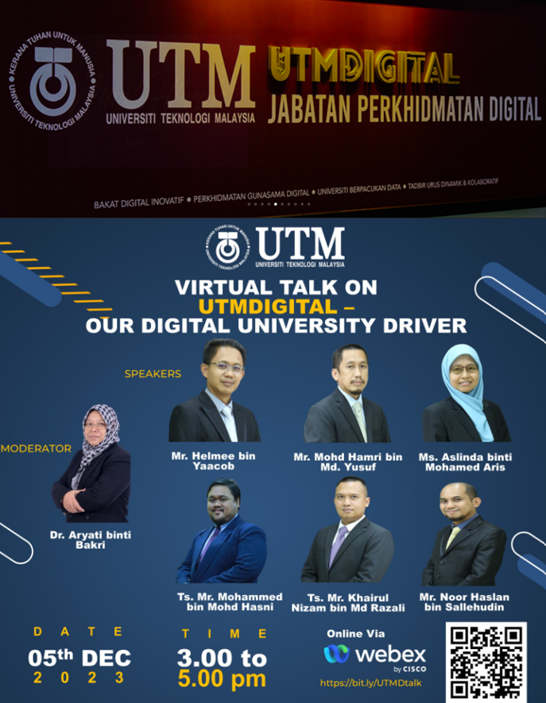

Assignment 1: Poster on Industry Talk 1
'Overview of ICT Jobs in Clarity Techworks Sdn. Bhd.' was the headline of the poster made after the talk was summarised.

Poster of the Overview of ICT Jobs in Clarity Techworks Sdn. Bhd.
Reflection
1. Summarization on what I have gained.
I think this industrial talk from Clarity Techworks really open my eyes on how the computer science industry works in real life situation. The talk highlighted the nature of ICT careers, emphasizing the essential of adaptability and staying in touch with the evolving technologies. The speakers also stressed the importance of a holistic approach to ICT careers, merging theoretical knowledge with practical skills. They also mentioned that for further success in this industry requires ongoing learning, practical experience and productive networking.
2. Suggestion from me.
For this Industrial Talk session, I suggest that it will be done in physical platform so the students can have direct conversation with the industry.
3. Others.
I think it will be good to have a Telegram group after the session so in the further time, students can ask more questions to the industry and they can share their answers to the students.
Assignment 2: Video on Industrial Visit 1
We've made a video about our first industrial visit to UTMDigital and also the short virtual brief talk from the university driver.

Video
Reflection
1. Summarization on what I have gained.
This industrial visit to UTM Digital really change my perspective on computer science industry. I have a clear picture of a company that focuses heavily on computer science thanks to this industry visit. I gain more knowledge about the company's environment as well as the apps and technologies that are utilised. The visit also make me realized how the role of UTM Digital is essential for all UTM individuals. It was such a great visit especially when I entered the data centre.
2. Suggestion from me.
For this Industrial Visit session, I suggest that it will be done in a more suitable time. For example, the data centre has a regular security check up which is 4 times a day, I really want to see how the check up goes on. So I think it will be better for the session to be held while the check up is ongoing.
3. Others.
Maybe if we can have more visit to the others company will be a great idea so the students can gain more information.